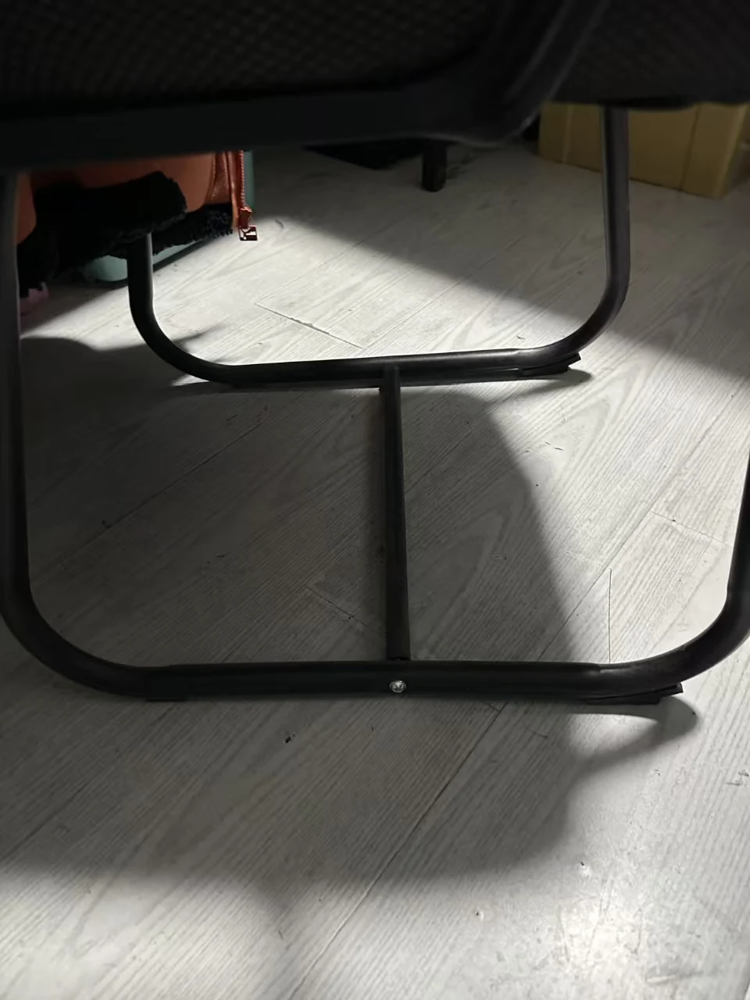
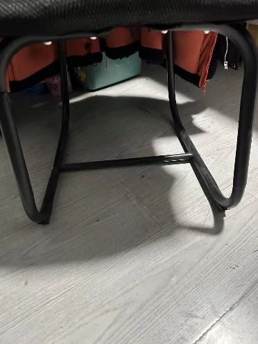
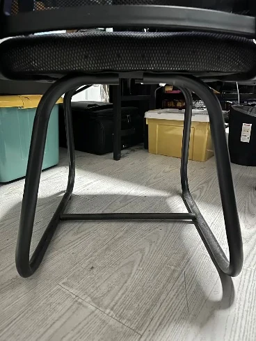
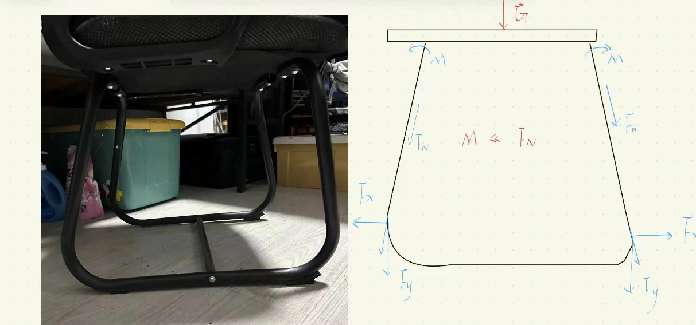
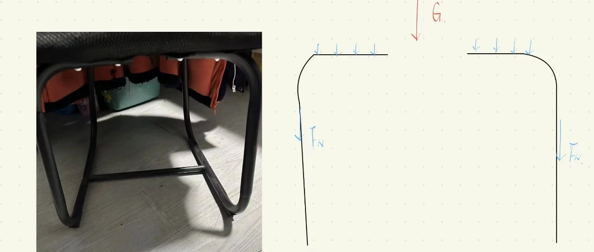
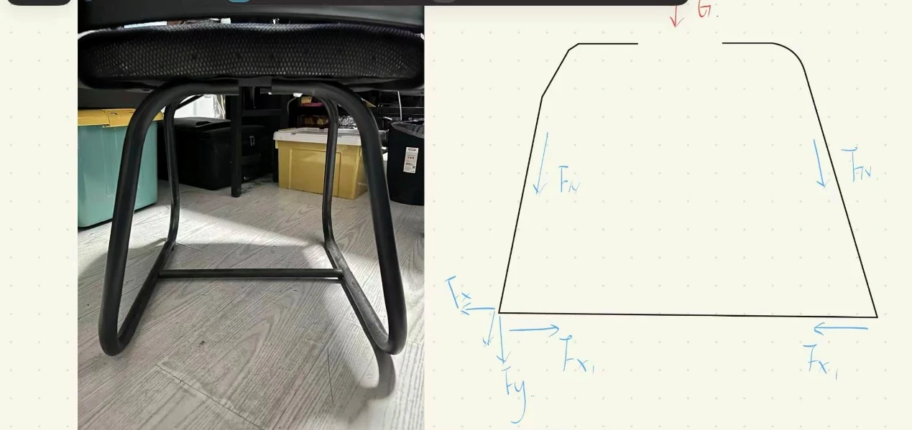

大连交通大学 · 智能建造23
我的原作弓形椅受力至拱桥巧思
朱吉晔
引言
上课讲到了拱结构设计突发奇想，回来看到了我的椅子，感觉结构有点类似（结构图如下）。
日常使用的弓形框架办公椅，看似是简单的家具构件组合，却暗藏精妙的力学设计逻辑。观察椅子的受力状态可知，人体施加的竖向压力经座面传递至弓形框架后，并未以单纯的弯曲形式分散，而是沿框架弧形杆身转化为轴向压力，横向加固横杆则承接框架向外的水平推力，避免结构向两侧张开。这一受力特征让笔者意识到，这把普通椅子的设计实则复刻了拱结构的核心力学原理。
拱结构作为土木工程中经典的受力形式，其核心优势在于将竖向荷载转化为拱身的轴向压力，辅以拱脚的水平推力平衡设计，大幅降低构件的弯曲应力，实现材料利用效率的最大化。从椅子的弓形框架到桥梁的主拱肋，从横杆承推到系杆抗推，小到家具构件，大到桥梁建筑，拱结构“以压代弯”的受力逻辑始终贯穿其中。本文将以弓形椅的受力分析为切入点，探究拱结构的力学本质，以及其在不同尺度工程场景中的应用启发。



力的体现与展示
图一 在U形杆端内部进行的力的传递与压杆稳定性原则（受力图如下）

1. 轴向压力（主导力）
人体竖向压力传递到曲杆顶部后，沿曲杆弧形轮廓向下传递，转化为沿杆身的轴向压力（而非弯曲力），这是拱结构最典型的受力特征——就像拱桥拱圈承接桥面荷载后，力沿拱身以轴向受压形式传递。
2. 水平推力（派生力）
轴向压力会分解出向外的水平分力（水平推力），使得左右曲杆有向两侧“撑开”的趋势，这个推力最终由中间的竖向横杆（图中可见的竖向连接杆）和底部横向杆共同承接（横杆受压）。
3. 局部弯矩（次要力）
曲杆的弧形弯折处（尤其是顶部与座面连接段、底部落地弧形段）会产生轻微的局部弯矩，属于“压弯组合受力”，但弯矩占比远低于轴向压力，体现拱结构“以压代弯”的优势。
图二 受力如下

在端面与底座接触处弯曲结构，能有效分散轴力，保证稳定
在与地面接触处做了圆弧处理，能有效降低单位面积上的应力，避免集中力过大导致的钢材形变和开裂
落地端作为曲杆的下端约束点，限制了杆件的横向位移，大幅降低曲杆的长细比，提升抗失稳能力
图三 受力如下

主要关注横杆的作用
在整体受向下的压力作用的时候，起到水平拉力的作用，防止杆件向外扩张，类似拱结构中承压拉压平衡的原理
横杆的长度较短，抗压能力较强，能保持较高的压杆稳定水平，长细比越小越稳定
横杆和曲杆之间有剪切力，节点的刚性连接很大程度上保证了力的有效传递，避免出现框架的侧移及滑动，满足刚节点的抗剪需求
对拱结构的思考
这把椅子的结构与拱结构很像，类似没有铰链接的拱桥，拱桥的设计核心思路也围绕着以压为主的理念，减少剪切力的想法，如果按我这个椅子的思路来设计一个拱桥，是不是可以通过在合适部位增加‘拱圈‘的想法来达到更加稳定的效果
设计考量
参考椅子曲杆的受压设计，优化拱桥拱圈的截面与材料，让拱身以轴向受压为主，最大化利用建材抗压优势
借鉴椅子横杆平衡水平推力的原理，为拱桥设置系杆/横撑承接拱身的水平推力，避免拱脚外移
参照椅子曲杆落地端的约束设计，强化拱桥拱脚支座的抗推与支撑能力，保障力的平衡
对标椅子节点的刚性连接与应力分散设计，优化拱桥拱身、系杆、支座的连接节点，规避应力集中，确保整桥受力体系稳定，实现“以压代弯”的高效力学设计。
这是一份便于网页阅读的原作视图，保留提交内容的文字、图片和基本顺序；公开页面不显示学号。